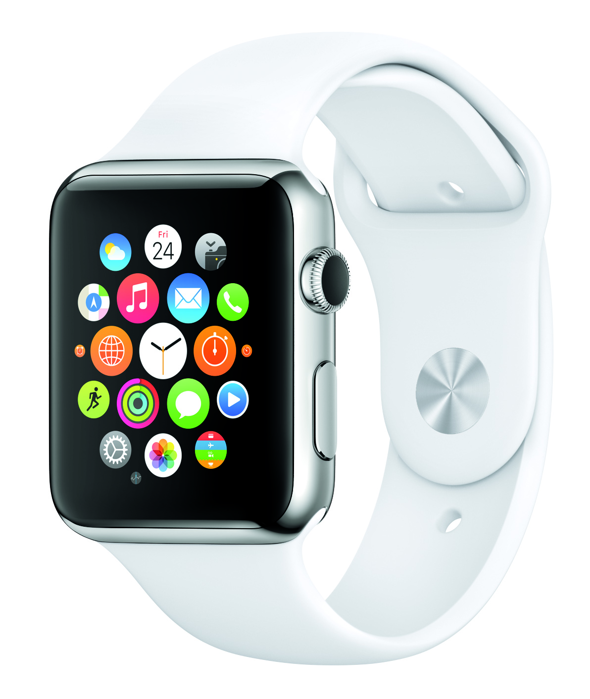
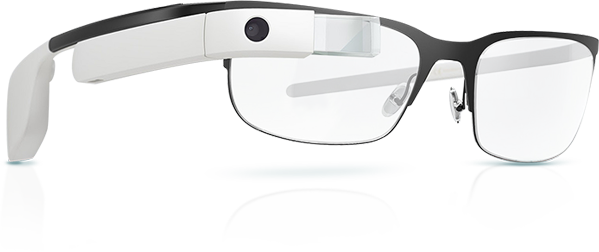
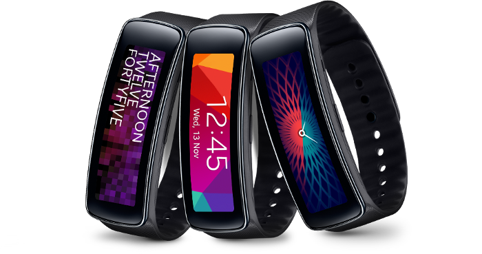
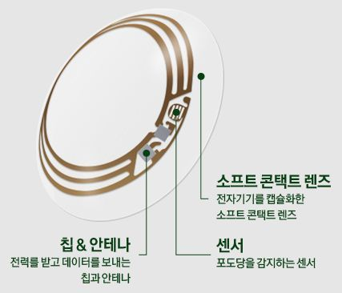

역사
웨어러블 디바이스 연구가 처음 시작된 것은 1960년대 MIT 미디어랩에서 초기 부착형 타입의 웨어러블 컴퓨팅에 대한 연구가 시초이다.
스마트폰 활성화 이후인 2010년대에 접어들면서 웨어러블 디바이스의 본격적인 Connected Device로의 확장 시도가 일어나기 시작했다.
2014년 9월 9일 애플에서도 시계형 웨어러블 디바이스인 애플워치를 발표하여 웨어러블 컴퓨터 시장은 더욱 커질 것으로 예상된다.
웨어러블 디바이스 연구가 처음 시작된 것은 1960년대 MIT 미디어랩에서 초기 부착형 타입의 웨어러블 컴퓨팅에 대한 연구가 시초이다.
스마트폰 활성화 이후인 2010년대에 접어들면서 웨어러블 디바이스의 본격적인 Connected Device로의 확장 시도가 일어나기 시작했다.
2014년 9월 9일 애플에서도 시계형 웨어러블 디바이스인 애플워치를 발표하여 웨어러블 컴퓨터 시장은 더욱 커질 것으로 예상된다.
애플 워치에는 기본적으로 전화, 메시지, 메일, 캘린더, 액티비티, 운동, 지도, 패스북, 시리, 음악, 카메라 리모트, 리모트, 날씨, 주식, 사진, 시계(스톱워치 등),
설정 애플리케이션을 내장하고 있으며, 연동하는 iOS 기기의 설정을 통해 앱스토어에서 다른 제작자가 만든 앱을 다운 받아 설치할 수 있다.
구글 글래스(Google Glass)는 구글이 "프로젝트 글래스"(Project Glass)라는 연구개발 프로젝트로 개발 중인 헤드 마운티드 디스플레이(HMD)가 장착된 착용 컴퓨터로서,
대량 판매 시장에 유비쿼터스 컴퓨터를 판매하는 임무를 포함한다.
삼성 기어 핏(Samsung Gear Fit)은 삼성전자에서 제조/판매하는 스마트 밴드형 스마트 워치로, 브레슬릿 타입의 웨어러블 기기이다.
Google Contact Lens is a smart contact lens project announced by Google on 16 January 2014.
The project aims to assist people with diabetes by constantly measuring the glucose levels in their tears.
The project is being carried out by Verily and it is currently being tested using prototypes.
|  |  |  |  |